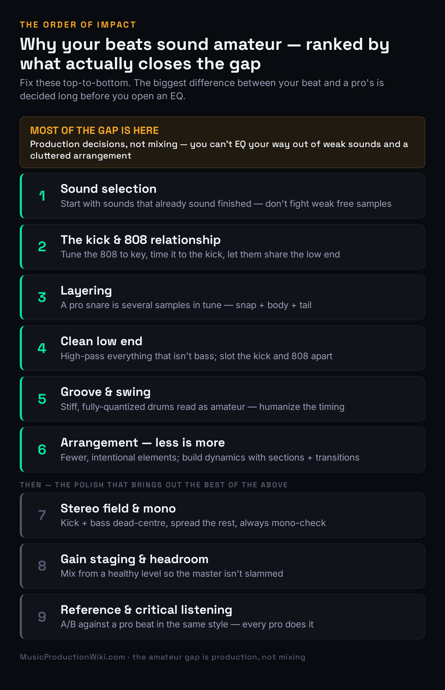
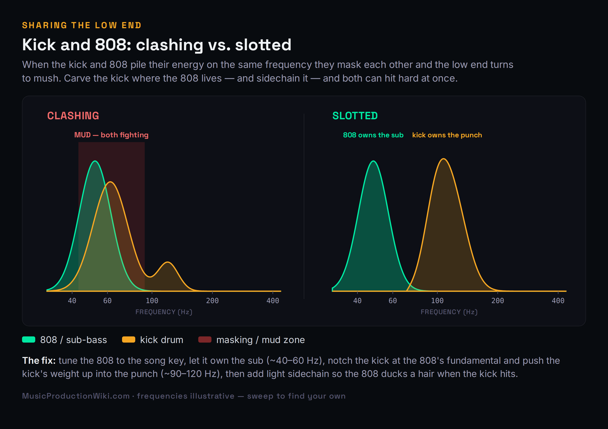
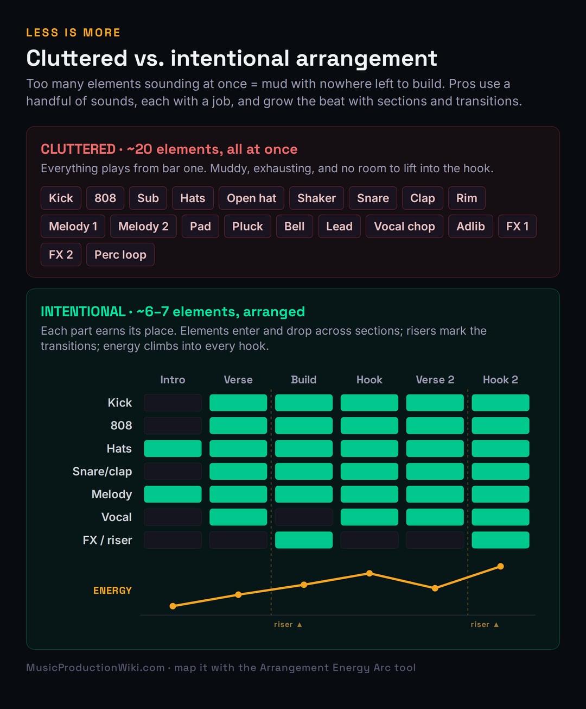

You make a beat, it sounds great in your headphones at 1 a.m., and then you drop it next to a track from an artist you actually listen to — and the gap is brutal. Theirs hits harder, sounds wider, feels finished. Yours sounds… thin. Cluttered. Small. Amateur. Almost everyone who makes beats hits this wall, and almost everyone reaches for the wrong tool to climb it: they open an EQ, watch a mixing tutorial, and start carving frequencies on a beat that was never going to sound pro no matter how it was mixed. This page is the honest version of the answer nobody puts in the “9 tips” listicles, because it reorders everything: the gap between your beats and a professional’s is almost never a mixing problem. It is a sound-selection, low-end, and arrangement problem — decided long before you touch a single plugin.
That is not bad news. It is the best news you could get, because production decisions are learnable and free, and they are exactly the things you have full control over. The work below is ranked by impact, not by what is easy to demo on YouTube. We’ll start with the single change that closes more of the gap than anything else, walk down through the kick-and-808 relationship that makes or breaks every modern beat, and end with the polish — stereo, staging, references — that only matters once the foundation is right. If you have ever wondered why your beats sound boring, weak, muddy, or just off next to the pros, the cause is in here, and so is the fix.
Pro beats come from decisions made before the mix. In order of impact: start with high-quality sounds (you can’t fix weak samples), lock the kick↔snare and kick↔808 relationships, layer for body, carve the low end so nothing clashes, add groove so it isn’t robotic, arrange with restraint (fewer, intentional elements), use the stereo field, gain-stage for headroom, and A/B against a reference. Mixing brings out the best of your sounds — it cannot rescue bad ones. Fix the production and most of the “amateur” disappears on its own.
It’s the Production, Not the Mix
Here is the misconception that keeps thousands of beatmakers stuck: that a great mix is what separates an amateur beat from a professional one. It feels true because mixing is the part that looks technical and important — meters, EQ curves, compressor knobs. But ask anyone who actually mixes records for a living and they’ll tell you the opposite. Mixing doesn’t fix the problems; the production does. Sound selection, sound design, the beat-making itself — that’s what determines whether a beat sounds professional. Mixing only brings out the best of what is already there. If the sounds are weak, the arrangement is cluttered, and the low end is fighting itself, the most skilled mix engineer alive can only make a polished version of a weak beat.
This reframe matters because it tells you where to spend your hours. Most people invert the effort: they spend ten minutes picking sounds and three hours EQ-ing them, when the ratio that produces pro results is closer to the reverse. The pros front-load the work into the part that actually moves the needle — choosing or designing sounds that already sound finished, and arranging them so each one has room — and then the “mix” becomes mostly balancing and small corrective moves rather than rescue surgery. When you hear a producer say a beat “mixed itself,” that is what they mean: the production was so clean that there was almost nothing left to fix.
So the structure of everything below is deliberately an order of impact, not a checklist of equal items. The fixes near the top — sound selection, the kick/808 relationship, layering, low-end carving, groove, arrangement — are where the overwhelming majority of the “amateur” quality lives. The fixes near the bottom — stereo width, gain staging, reference checking — are real and worth doing, but they are polish on a foundation, and polishing a broken foundation is wasted effort. If you only have one evening, spend it at the top of this list. The uncomfortable truth, stated once so we can move on: you cannot EQ your way out of weak samples and a cluttered arrangement. No plugin in existence does that.

#1 — Sound Selection: The Highest-Leverage Change You Can Make
If you change one thing after reading this, change where your sounds come from. The single biggest difference between an amateur beat and a professional one is that the pro started with sounds that already sounded professional. They didn’t take a weak, lifeless drum hit and process it into greatness; they picked a kick with the right transient shape, a snare with real body and crack, and an 808 that was already clean and full, and then they barely had to touch them. Amateurs do the opposite: they grab the first free drum kit they found, build the whole beat on sounds that were thin or harsh or muddy to begin with, and then spend hours trying to EQ life into something that never had any.
A finished-sounding sample has three things going for it before you do anything: the right transient (the attack that makes a kick punch and a snare snap), a balanced frequency content (not boomy, not brittle), and harmonic richness that sits well in a mix. You can hear it instantly when you solo it — it sounds like a record, not like a demo. Those qualities are extraordinarily hard to manufacture after the fact and almost free to choose up front, which is exactly why sound selection is the highest-leverage move in beat-making. Spend the time auditioning twenty kicks to find the one that hits, and you have saved yourself an hour of mixing and gotten a better result.
The practical version of this is unglamorous but decisive. Use quality kits and sample libraries rather than whatever turned up in a random pack three years ago, and never rip drums off a lossy YouTube rip — the compression artifacts and the missing low end are baked in and unrecoverable. Build a small library of go-to sounds you trust so you’re not starting from zero every session. When you need raw material, our roundups of the best sample packs and the best drum-machine plugins are where to start, and the broader workflow of putting those sounds together lives in our guide to making a beat. The point is not to spend money — plenty of free libraries are excellent — it is to be ruthless about quality at the source, because that is the one decision the rest of the beat is built on top of.
One practical refinement separates good sound selection from a frustrating one: audition sounds in the context of the beat, not just in solo. A kick that sounds enormous on its own can disappear the moment the 808 comes in, and a snare that’s perfect alone can clash with the melody. So load your loop, get the core elements playing, and swap candidate sounds against everything else — the right kick is the one that hits in this beat, with these other sounds around it, not the one that sounded biggest in isolation. This is also why building a small, trusted palette pays off: when you already know how your go-to kick behaves against your go-to 808, you spend less time auditioning and more time making music, and your beats develop a consistent sonic signature instead of sounding like a different producer every track.
There is a mindset shift hiding in here too. Beginners treat sound selection as a quick step to get past so they can “really start producing.” Pros treat it as the production. Picking the kick is not a chore before the creative work — it is the creative work, because the character of your sounds is the character of your beat. The same melodic idea sounds amateur with a cheap, thin piano and professional with a rich, well-recorded one, and no amount of mixing closes that gap. Slow down at the start. Choose like it matters, because it matters more than anything you’ll do afterward.
#2 — The Kick, the Snare, and the 808
Every beat lives or dies on its backbone: the relationship between the kick and the snare, and in modern hip-hop and trap, between the kick and the 808. Get these two relationships right and the beat feels solid and professional even before you add anything else; get them wrong and no melody, no mix, no master will save it. The kick and snare are the heartbeat — they need to be balanced against each other in level and tone so neither buries the other, and they need to hit with intention rather than just sitting there. That is partly sound selection again (pick a kick and snare that already complement each other) and partly the groove we’ll get to, but it starts with treating that backbone as the thing the whole beat hangs on. Our guide to mixing drums covers the level-and-tone balancing in depth.
The kick-and-808 relationship is where most modern beats fall apart, because the kick and the 808 both want to live in the low end, and if you let them fight there, the result is the muddy, undefined bottom that screams “amateur” on any real speaker. The three moves that fix it are simple to state and transformative to apply. First, tune the 808 to the key of the song — an out-of-tune 808 clashes with the melody and sounds wrong in a way most beginners feel but can’t name. Second, time the 808 to the kick so their transients line up instead of smearing into each other. Third, let them share the low end instead of fighting for it: carve the kick where the 808’s fundamental lives, sidechain the 808 to duck a hair when the kick hits, and suddenly both can be loud at once.
That third move is the one worth seeing rather than just reading. When the kick and 808 both pile their energy onto the same frequency, they mask each other — the ear can’t separate them, the low end loses punch, and turning either one up just makes the mush louder. When you slot them apart so the 808 owns the sub and the kick owns the punch, both come through clean and the bottom end hits like a record. The diagram below shows the difference in shape.

The tools make this almost mechanical. Run your 808 through the 808 Sub-Bass Tuner to lock it to your key so it stops clashing with the melody, and drop your kick and 808 into the Frequency Conflict Detector to see exactly where they’re masking each other instead of guessing. For the deeper craft — designing the 808 itself, choosing between a clicky transient layer and a pure sub, and dialing the saturation that makes it translate on small speakers — our walkthrough on making trap 808s from scratch goes step by step, and the same separation logic applies to any low-end source covered in our guide to mixing bass. Lock this one relationship and you have fixed the single most common reason beats sound weak.
#3 — Layering: Why a Pro Snare Is Never One Sample
Listen closely to a professional snare or clap and you are almost never hearing a single sample. You’re hearing two or three or four layered together — a tight transient for the snap, a body layer for the weight, and often a noise or tail layer for the sustain — blended so they read as one big, finished hit. The same is true of kicks (a sub layer plus a click) and even hats (a couple of samples for width and texture). This is one of the quiet reasons amateur drums sound small: a single sample, however good, rarely has everything a pro hit needs, and stacking is how you build the missing pieces in.
The discipline that separates good layering from a muddy mess is tuning and timing. Layered drums have to be in tune with each other — two snares whose fundamentals clash sound worse than either one alone — and their transients have to line up so the layers hit as a single attack rather than a flammed smear. Pick layers that contribute different things: don’t stack two samples that both have body and no top, stack one that brings the snap and one that brings the weight. Then high-pass the body layer if it’s adding low-end clutter, and nudge the layers into perfect sample alignment so the combined transient is sharp. Done right, the listener never hears “three samples” — they hear one snare that happens to sound expensive.
Layering is also where restraint pays off, because more layers is not better past a point — it just gets ugly and phasey. The goal is a full, finished single hit, not a pile. Two or three well-chosen, well-tuned layers will out-perform six fighting ones every time. If you build a snare from a snap, a body, and a short reverb tail and it already sounds like a record, stop. This is the same “intentional, not maximal” instinct that runs through this entire list, applied at the level of a single drum hit, and it is a habit worth building early because it shapes how you hear every sound you stack from then on.
#4 — Clean Low End: The Carving That Clears the Mud
If your beats sound muddy — thick, congested, undefined — the cause is almost always low-end and low-mid buildup on elements that have no business carrying it. This is the single most impactful mixing move in beat-making, and unlike most of this list it really does happen with an EQ, which is why it’s the one mixing fundamental worth treating as a production decision. The principle is simple: in a busy beat, many sounds carry low-frequency energy they don’t need — hats, claps, vocal chops, synth stabs, percussion — and that stacked, unused energy is pure mud with no upside. Strip it and the whole beat opens up.
The move is a high-pass filter on everything that isn’t the kick, bass, or 808. Roll off the lows on each non-bass element just below the lowest note it actually uses — hats and claps can usually come up to 100 Hz or higher with zero loss, stabs and chops a bit lower — and that one habit, applied across a dozen tracks, clears more mud than any single dramatic move. Then handle the kick and 808 the way we covered above: frequency-slot them so one owns the sub and the other owns the punch, cutting each where the other lives. Finally, sweep for resonances — a narrow EQ boost dragged through the low-mids will find the specific frequency that sounds worst, and you cut there. If you want the full diagnostic version of this, our deep dive on why a mix sounds muddy walks through finding and clearing buildup band by band.
Two warnings save beginners from over-correcting. First, the low-mids around 200–500 Hz carry warmth and body as well as mud — the goal is to remove the excess, not gut the region, or the beat ends up thin and lifeless, which is its own kind of amateur. Make small cuts (a few dB), and reference a pro beat in the same genre so you know how much low-mid weight is normal for your style; trap and drill carry far more low-end heft than lo-fi. Second, never high-pass the kick or 808 to clear mud — their lows are the point. To see exactly where your beat departs from a clean genre target rather than guessing, drop the full mix into the Mix Fingerprint, which flags the band and section where your low end is heavy. Clean the low end and a huge share of the “muddy, amateur” quality is simply gone.
#5 — Groove, Swing, and Humanization
Drag every drum hit perfectly onto the grid, quantize everything to dead-straight 16ths, and you will get a beat that is technically correct and emotionally flat. Stiff, fully-quantized drums are one of the most recognizable tells of an amateur beat — they sound robotic and lifeless because real grooves breathe. The pros add intentional looseness: hats and percussion nudged slightly off the grid, velocities that vary instead of every hit being identical, ghost notes that fill the spaces between the main hits, and hat rolls and triplets that give the rhythm momentum. None of this is random sloppiness; it’s controlled imperfection that makes a programmed beat feel played.
The fastest entry point is your sequencer’s swing control, which shifts the off-beats a touch late to create that classic head-nod feel — a little goes a long way, and the right amount depends on the genre. Beyond swing, the moves that matter most are velocity variation (so hats and snares have dynamic life rather than machine-gun sameness), micro-timing (nudging certain hits slightly ahead or behind to push or relax the groove), and ghost notes (quiet hits between the loud ones that add propulsion you feel more than hear). Our guide to groove and swing breaks down exactly where to apply each, and the compression that glues a humanized drum bus together — so the dynamics read as feel rather than chaos — lives in our walkthrough on drum compression.
What makes this an order-of-impact item rather than an afterthought is how much it changes the feel of a beat that is otherwise fine. You can have great sounds and a clean low end and still have a beat that sits there because the rhythm is rigid. Adding groove is often the difference between a beat someone scrolls past and one they nod to without deciding to. Spend real time here — loop a four-bar section and tweak the hat timing and velocities until it stops sounding programmed and starts sounding like a person made it — because feel is one of the hardest things to fake and one of the clearest signals that a beat was made by someone who knows what they’re doing.
#6 — Arrangement: Less Is More
The most common reason a beat sounds cluttered and amateur is that too many things are happening at once. Beginners pile in every idea — two melodies, a pad, a pluck, a bell, three percussion loops, endless adlibs — all playing from bar one, and the result is muddy, exhausting, and worst of all static, because if everything is in from the start there is nowhere left to build. Professional beats usually use surprisingly few elements: a handful of sounds, each with a clear job, nothing overlapping or fighting for the same space. The discipline is subtraction. When a part isn’t adding something specific, it’s taking something away — clarity, headroom, impact — and the fix is to mute it, not to EQ around it.
The classic example is the spare, hard-hitting beats that dominate modern hip-hop: often six or seven elements total — kick, 808, hats, a snare or clap, a melodic loop, maybe one or two accents — each given room to breathe. That sparseness is not a lack of ideas; it’s a choice, and it’s why those beats hit so hard. Every element you remove makes the ones that remain louder and clearer, because they’re no longer competing. If you find yourself fighting the same frequency buildup across five tracks, that’s the arrangement telling you that five things are doing one job — and the real fix is to have fewer of them, not to keep carving holes until they all sound thin.
The second half of arrangement is movement: using sections and transitions so the beat goes somewhere. Elements should enter and drop across the track — strip back for the verse, bring everything in for the hook — and transitions like risers, sweeps, and drops should mark the changes so each section lands. That contrast is what makes a hook feel like a hook: it hits harder because the verse pulled back first. A beat where nothing changes for two minutes sounds amateur even if every individual sound is great, because professional music breathes — it has tension and release built into its structure. The diagram below contrasts the cluttered all-at-once approach with an intentional arrangement that builds.

The craft of structuring a track — where sections change, how long to hold each one, where the energy should peak — is its own skill, covered in depth in our guide to arranging a song. To plan the energy curve visually before you commit, the Arrangement Energy Arc lets you map where each section should sit so the build into your hook is intentional rather than accidental, and the Arrangement Timer helps you pace section lengths to a real song structure. Arrangement is where a collection of good loops becomes an actual beat — treat it as production, not as an afterthought you tack on at the end.
#7 — The Stereo Field (and Why You Always Check Mono)
Beginner beats are often mono and lifeless — everything stacked dead-center, fighting for the same narrow strip of the stereo image. Professional beats use the full width: the kick, bass, and 808 stay centered (low frequencies should be mono for a tight, powerful low end and so the beat translates on club systems and phones), while hats get a little pan, percussion spreads wider, and pads and atmospheres open up across the field. That width is part of what makes a pro beat feel big and three-dimensional rather than flat — each element has its own place not just in frequency but in space, so the ear can separate them.
The discipline that keeps stereo width from becoming a liability is the mono check, and it is non-negotiable. After you’ve panned and widened, collapse the whole beat to mono and listen. If a sound gets dramatically quieter or vanishes, you have a phase problem — usually from over-aggressive stereo widening on a sound that should have stayed narrow — and it will sabotage the beat the moment it plays on a mono system, which is most phones, many club PAs, and plenty of laptop speakers. Keep the low end mono, widen with intention, and always confirm in mono that nothing falls apart. This is closely tied to making a beat that holds up everywhere, which our guide to music that translates on any system covers in full. Width is a tool for size and separation — used carelessly it’s a tool for sabotage, and the mono button is how you tell the difference.
#8 — Gain Staging and Headroom
This is lower on the list because it’s corrective rather than creative, but skipping it quietly undermines everything above it. Gain staging means keeping every level in a healthy range as signal flows through your beat — pulling faders down and balancing from a sensible starting point instead of letting everything creep up toward clipping. The reason it matters for beats specifically is headroom: if your individual tracks and your master are already slammed near the ceiling, you have no room left to make the kick and 808 truly hit, and any master-bus processing you add just squashes a beat that was already too loud. A beat mixed with proper headroom has space for the low end to punch; a beat with no headroom sounds flat and lifeless no matter what you do to it.
The fix is unglamorous and fast: start with your faders low, build the balance from there, and aim to leave comfortable headroom on the master so nothing is clipping and there’s room for the final stages to work. This isn’t about hitting a magic number on a meter — it’s about not painting yourself into a corner where the only way to make the beat louder is to crush it. For the full procedure, including the level targets worth aiming for and the common myth about a single “correct” level, see our dedicated guide to gain staging your mix. Get the staging right early and every move that follows — the low-end carve, the glue compression, the master — works the way it’s supposed to, because you gave it room to breathe.
#9 — Reference and Critical Listening
Every professional references, and it is not cheating — it is standard practice. Pull up a released beat in the same style as yours, match its loudness roughly to yours so you’re not fooled by a level difference, and A/B them back and forth listening for specific things: is the reference’s low end weightier or tighter, its high end brighter, its image wider, its elements more separated? Where your beat falls short on the same passage, that’s your gap, and it points you straight at what to fix. The value of a reference is that it ends the argument with yourself about whether something is wrong — you stop mixing to a vague idea of “good” and start mixing toward a concrete target you can hear.
The reason this is at the bottom of the list is not that it’s unimportant — it’s that referencing reveals problems whose fixes are all the items above it. You A/B, you hear that your low end is muddy, and the fix is the kick/808 carve from section four; you hear that your beat sounds small, and the fix is layering or stereo width; you hear that it’s static, and the fix is arrangement. Referencing is the diagnostic that tells you which of the higher-impact moves you still need to make. Make it a habit early in the process, not just at the end — checking against a reference while you produce keeps you honest before bad decisions pile up. To go beyond your ears, the Mix Fingerprint compares your beat’s tonal balance against genre-calibrated targets and shows you exactly where you depart from a clean reference, so you know whether your low-mids are genuinely heavy or whether your room and your headphones were lying to you.
One honest caveat about all nine of these: this is the same craft whether you’re making trap, drill, or lo-fi — the priorities shift but the order of impact holds. A trap beat lives or dies on the 808; a drill beat on its sliding 808s and dark, sparse arrangement; a lo-fi beat on texture, warmth, and groove over low-end weight. The genre tells you which knobs to turn hardest, but it never changes the truth that sound selection beats mixing, that the kick and 808 have to be slotted, and that a cluttered arrangement can’t be saved with an EQ. And the same logic that makes your beats sound pro is what makes the vocals on top of them sound pro — if you record or place vocals over your beats, our companion guide to making vocals sound professional is the other half of “how do I sound like a record.”
The 60-Second Beat Self-Diagnosis
When your beat sounds amateur but you can’t name why, run the symptom down this table to the cause, the section that fixes it, and the tool that makes it fast. Most amateur beats are guilty of three or four of these at once, so don’t stop at the first match.
| Symptom | Most likely cause | Fix · section | Tool |
|---|---|---|---|
| Sounds boring / static | Everything plays at once; no movement | Arrangement — less is more · #6 | Arrangement Energy Arc |
| Sounds muddy / undefined | Low-mid buildup; kick & 808 clashing | Clean the low end · #4 | Frequency Conflict Detector |
| Sounds weak / thin / small | Weak source sounds; no layering | Sound selection · #1, Layering · #3 | Best sample packs |
| Sounds robotic / stiff | Everything dead-on-grid, no dynamics | Groove & swing · #5 | — |
| Sounds narrow / flat | Mono, everything centered | Stereo field · #7 | Mix Fingerprint |
| 808 won’t hit / clashes with melody | Out of tune; fighting the kick | Kick & 808 · #2 | 808 Sub-Bass Tuner |
The pattern across every row is the same, and it’s the whole point of this page: the cause is almost never “my mix is bad” in the abstract. It’s a specific production decision — a weak sound, a clashing low end, a cluttered arrangement, a stiff groove — and each one has a specific, learnable fix that lives upstream of the mix. Stop trying to EQ your way to professional. Fix the production, in order of impact, and the “amateur” quality disappears on its own — because it was never living in the mix to begin with.
Three Drills to Close the Gap
Reading the order of impact is one thing; rewiring your habits is another. Run these three in order — each one trains a different layer of the gap between amateur and pro.
- Take your last finished beat and rebuild it from scratch using only sounds you’d call genuinely professional — audition until each one sounds like a record in solo.
- Hard-cap yourself at seven elements total. Every sound has to earn its place; if it isn’t adding something specific, leave it out.
- A/B the rebuild against the original. The cleaner, bigger version is what sound selection plus restraint buys you — before you’ve mixed anything.
- Frequency-slot your kick and 808: tune the 808 to the key, carve the kick where the 808’s fundamental lives, and add light sidechain so the 808 ducks when the kick hits.
- High-pass every element that isn’t the kick, bass, or 808 to just below its lowest useful note.
- Collapse the whole beat to mono and listen. If the low end stays tight and nothing vanishes, you’ve fixed the biggest source of mud in most beats.
- Take a static loop and humanize it: add swing, vary the hat and snare velocities, drop in ghost notes, and nudge a few hits off the grid until it feels played rather than programmed.
- Arrange it into a real structure — strip back for a verse, build with a riser, drop everything in for the hook — so the energy moves across the track.
- A/B the finished version against a professional beat in the same style at matched loudness, and write down the one gap that’s left. That’s your next session.
Frequently Asked Questions
Almost always because of production decisions, not mixing — weak source sounds, a kick and 808 fighting in the low end, and a cluttered arrangement with too many elements at once. Those three account for most of the gap, and none of them is fixable with an EQ after the fact. Start with better sounds, slot the low end, and use fewer, more intentional elements, and the “amateur” quality largely disappears before you mix anything.
Usually the samples and the production around them, far more than the mixing. A mix brings out the best of the sounds you chose; it can’t turn a weak, thin sample into a strong one. If a sound is harsh, boomy, or lifeless in solo, no amount of EQ makes it professional — you replace it. Spend the time auditioning and choosing sounds that already sound finished, and you’ll find most of what you blamed on “bad mixing” was really bad source material.
Three moves, in order: tune the 808 to the key so it stops clashing with the melody, separate it from the kick so they don’t mask each other (let the 808 own the sub, carve the kick where the 808’s fundamental lives, and add light sidechain so the 808 ducks when the kick hits), and add a touch of saturation or distortion so it has harmonics that read on small speakers with no real sub. A harder-hitting 808 is almost always about separation and tuning, not just volume — turning a clashing 808 up only makes the mud louder.
Fewer than you think — many professional beats run on six or seven elements total, each with a clear job. There’s no hard rule, but if you’re past a dozen sounds all playing at once you’re almost certainly into clutter, where elements mask each other and the beat has nowhere left to build. The discipline isn’t a number; it’s that every sound has to earn its place. When a part isn’t adding something specific, mute it — the elements that remain get louder and clearer the moment they stop competing.
Low-end and low-mid buildup, almost always from two sources: elements that don’t need low frequencies still carrying them, and a kick and 808 piling energy onto the same band. High-pass everything that isn’t the kick, bass, or 808 just below its lowest useful note, then frequency-slot the kick and 808 so one owns the sub and the other owns the punch. Sweep the low-mids for the specific frequency that sounds worst and cut a few dB there — but don’t gut the region, because it carries warmth as well as mud.
Stop quantizing everything dead-straight. Add swing to shift the off-beats, vary your velocities so hits aren’t identical, drop in ghost notes between the main hits, and nudge a few hits slightly off the grid to push or relax the groove. Real grooves breathe — the goal is controlled imperfection, not random sloppiness. Loop a short section and tweak the hat timing and velocities until it stops sounding programmed and starts sounding played; that feel is one of the clearest signals that a beat was made by someone who knows what they’re doing.
No. None of the highest-impact moves — sound selection, the kick/808 relationship, layering, low-end carving, groove, arrangement — depend on expensive plugins. Stock EQ and compression do the corrective work fine, and plenty of free sample libraries are excellent. Quality of sounds matters enormously; quality of plugins barely moves the needle by comparison. Spend on good sounds and your time on production decisions before you spend on a fancier compressor.
Two things: the sounds themselves are finished and rich (a great kick and a well-designed 808 fill more space than three weak sounds), and layering builds fullness where one sample falls short — a pro snare is often several samples in tune with each other, read as one big hit. Add clean separation so nothing masks anything else, and a small number of strong, well-placed sounds occupies the whole frequency and stereo space without ever sounding empty. Fullness comes from quality and separation, not from quantity.
A bit of both, but lean toward getting the production right first. Make basic balancing and separation decisions as you go — slot the kick and 808, high-pass clutter, keep levels healthy — so problems don’t pile up. But the real, detailed mix is best done once the arrangement is finished, because a beat that’s still changing isn’t ready to fine-tune. The key is that “mixing as you go” shouldn’t become an excuse to fix production problems with the mixer — if a sound is wrong, replace it; don’t EQ around it for an hour.
Pull up a released beat in the same style, match its loudness roughly to yours so a level difference doesn’t fool you, and switch back and forth on a dense section listening for one thing at a time: low-end weight, brightness, width, and how separated the elements are. Where your beat falls short on the same passage is your gap, and it points straight at which higher-impact fix you still need. Referencing isn’t cheating — every pro does it — and a tool like the Mix Fingerprint can compare your tonal balance against genre targets when your ears or your room aren’t trustworthy.
Usually because nothing changes — every element is in from bar one and stays in, so there’s no tension and no release. Professional beats breathe: they strip back for verses and build into hooks, using transitions like risers and drops to mark the changes. Arrange your beat so elements enter and drop across sections and the energy climbs into each hook, and a beat made of the exact same sounds suddenly has momentum. “Boring” is almost always an arrangement problem, not a sound problem.